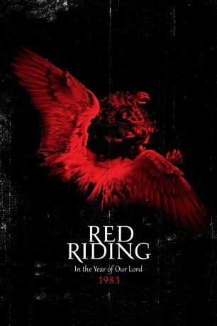

#10177 Red Riding - Yorkshire Killer 1983
Alternativ: Red Riding: The Year of Our Lord 1983 (Englischer Titel)
 
 IMDB-Wertung: 7.2 / 10
IMDB-Wertung: 7.2 / 10  Metascore: 77
Metascore: 77 
Dritter Teil der düsteren "Red Riding"-Trilogie: Immer noch sind die Mordserien in Yorkshire von 1974 und 1980 nicht ganz aufgeklärt. Hohe Beamte der Polizei und Honoratioren der Gemeinde haben die entscheidenden Spuren verwischt. John Piggott, ein von Misserfolg geprägter Anwalt, übernimmt den Fall eines geistig verwirrten Mannes, dem die Morde von einst angehängt wurden. Einstweilen wird der erfahrene Cop Maurice Jobson von Schuldkomplexen eingeholt. Jahrelang hat er die Augen vor den Taten seiner Kollegen verschlossen. Nun kann er nicht länger stillhalten...
Jahr: 2009
Dauer: 104 Minuten
FSK: 16
Land: England Studio: Kinowelt Home EntertainmentTonspuren: DTS - ,
Untertitel: Deutsch,
Auflösung: 1080p (1920x816) Größe: 4577 MB
Genre: Thriller, Drama, Krimi, Mystery
Regisseur: Anand Tucker
Drehbuch: David Peace, Tony Grisoni
Soundtrack: Barrington Pheloung
Darsteller:
Datei: X:\3-Trilogie(N-Z)\Red Riding - Yorkshire Killer\Red Riding - Yorkshire Killer 1983 (2009, FSK16, 1920x816).mkv seit 16.12.2018
Festplatte: HD Collection-3(N-Z)-6(A-Z)
 Alle Filme aus Gruppe '3-Trilogie(N-Z)\Red Riding - Yorkshire Killer'
Alle Filme aus Gruppe '3-Trilogie(N-Z)\Red Riding - Yorkshire Killer'